📋 Table of Contents
- 1. Introduction to the System
- 2. Getting Started
- 3. Interface Overview
- 4. Basic Operations
- 5. Betting Workflow
- 6. Customer Interaction
- 7. Cash Management
- 8. Customer TV Display System
- 9. Slip Printing & Validation
- 10. Troubleshooting
- 11. Security & Best Practices
- 12. Keyboard Shortcuts
- 13. Frequently Asked Questions
- 14. Commission Management
- 15. Transaction Management
- 16. Voucher Redemption
- 17. Customer Cashout Processing
1. Introduction to the Roulette Betting System
Welcome to the professional roulette betting system designed specifically for casino cashiers. This comprehensive manual will guide you through all aspects of operating the system efficiently and securely.
🎯 System Overview
The roulette betting system is a web-based application that allows cashiers to:
- Process customer bets on roulette games
- Manage cash transactions securely
- Print betting slips and receipts
- Track upcoming draws and results
- Handle customer inquiries and validations
System Access
The system is accessed through your web browser at: http://localhost:8080/slipp/index.php
🔐 Cashier Role Features
As a cashier user, you have access to:
- Customer betting interface
- Cash balance management
- Slip printing and reprinting
- Draw information and timing
- Basic customer service functions
Note: Administrative functions like slip cancellation are restricted to admin users for security purposes.
Browser Requirements
- Modern web browser (Chrome, Firefox, Safari, Edge)
- JavaScript enabled
- Stable internet connection
- Screen resolution: 1024x768 minimum (1920x1080 recommended)
2. Getting Started
Login Process
-
Open your web browser
Navigate to the system URL provided by your supervisor. -
Enter your credentials
Use the username and password provided during your training. -
Verify your role
Ensure you see the cashier interface (no administrative controls visible).
📸 Screenshot: Login Screen
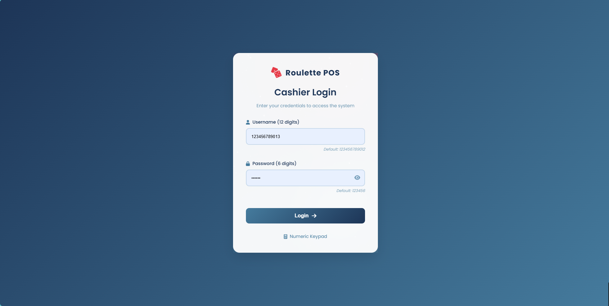
First Time Setup
⚠️ Important Security Notice
Never share your login credentials with anyone. Each cashier must use their own account for proper audit trails and security compliance.
-
Verify your cash drawer balance
Check that your starting cash amount matches the system display. -
Test printer connectivity
Print a test slip to ensure your printer is working correctly. -
Review current draw information
Check the upcoming draw times and any special announcements.
3. Interface Overview
The cashier interface is designed for efficiency and ease of use. Understanding each component will help you serve customers quickly and accurately.
📸 Screenshot: Main Interface Overview
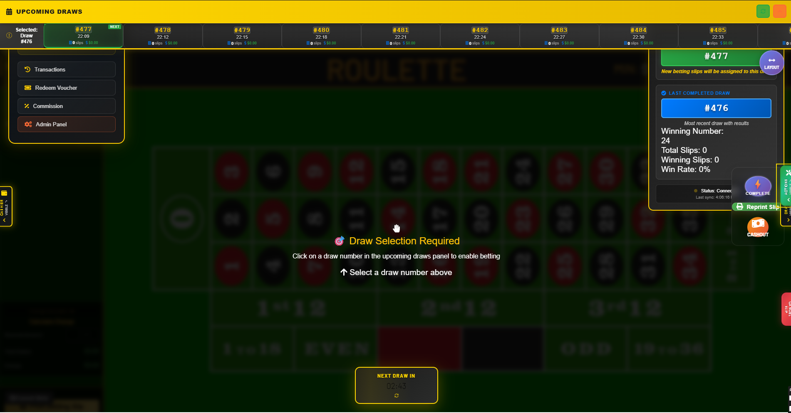
Key Interface Components
🎰 Roulette Table (Center Area)
The main betting area occupies the center of the screen with a green felt background:
- Number Grid: Individual numbers 0-36 arranged in the traditional roulette layout with red and black circles
- Outside Betting Areas:
- 1st 12, 2nd 12, 3rd 12 (dozen bets) at the bottom
- 1 to 18, EVEN, Red diamond, Black diamond, ODD, 19 to 36 in the lower section
- Stake Chips: Purple "100" chips visible on various betting positions
- Interactive Betting: Click any number or betting area to place bets
📸 Screenshot: Roulette Table Detail
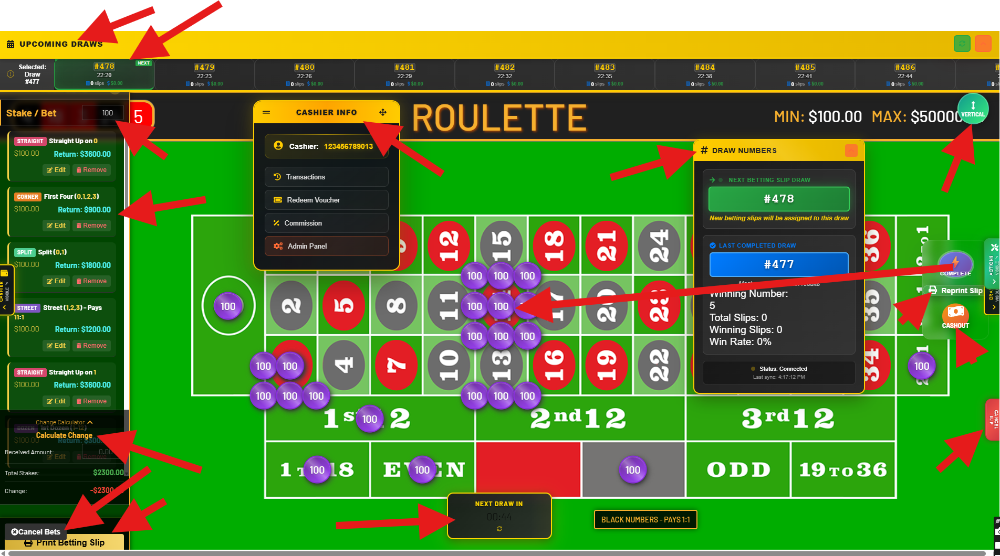
💰 Left Sidebar - Betting Controls
The left panel contains multiple betting options and stake management:
- Stake/Bet Section: Shows "Stake / Bet" with amount $100.00
- Betting Options: Multiple colored sections including:
- STRAIGHT: Straight up bets ($100.00, Return: $3600.00)
- CORNER: Four number bets ($100.00, Return: $900.00)
- SPLIT: Split bets ($100.00, Return: $1800.00)
- STREET: Street bets ($100.00, Return: $1200.00)
- Action Buttons: Each betting type has "GO ON" and "REMOVE" buttons
- Calculate Change: Button at bottom for transaction calculations
📊 Top Header - Upcoming Draws
The yellow header bar shows upcoming draw information:
- Draw Schedule: Multiple upcoming draws displayed with times (e.g., #478 22:29, #479 22:25, etc.)
- Current Status: Shows "UPCOMING DRAWS" with navigation arrows
- Draw Numbers: Sequential draw identifiers (#478, #479, #480, etc.)
- Time Display: Countdown timers for each upcoming draw
🎯 Right Panel - Draw Information
The right sidebar contains current draw details:
- DRAW NUMBERS: Section header with current draw info
- Current Draw: Large display showing "#478" as the active draw
- Next Draw Alert: "Next betting draw will be assigned to this draw" notification
- Previous Draw: Shows "#477" as the completed draw
- Winning Statistics:
- Winning Number: 5
- Total Slips: 0
- Winning Slips: 0
- Win Rate: 0%
- Reprint Slip: Button for reprinting betting slips
💰 Center Top - Cashier Info & Betting Limits
The center header displays important cashier and betting information:
- ROULETTE: Large game title prominently displayed
- Betting Limits: "MIN: $100.00 MAX: $50000" clearly shown
- Cashier Info Panel: Dropdown showing:
- Cashier ID: 12345678912
- Transactions
- Redeem Voucher
- Commission
- Admin Panel
⚡ Bottom Panel - Quick Actions
The bottom area contains essential betting controls:
- NEXT DRAW IN: Countdown timer display
- BLOCK NUMBERS - PARTS 1-1: Number blocking functionality
- QCancel Bets: Quick cancel button for current bets
- Print Betting Slip: Generate physical betting slip
4. Basic Operations
Placing Bets
The core function of the system is processing customer bets efficiently and accurately.
-
Select bet type from left panel
Choose from STRAIGHT, CORNER, SPLIT, or STREET betting options. Each shows the stake amount ($100.00) and potential return. Click "GO ON" to activate the selected bet type. -
Click betting area on roulette table
Click on the desired number or betting area on the green roulette table. Purple "100" chips will appear on selected positions. -
Monitor betting limits
Ensure bets stay within the displayed limits: MIN: $100.00 MAX: $50000. The system will enforce these automatically. -
Use "Calculate Change" if needed
Click the "Calculate Change" button at the bottom of the left panel for payment calculations. -
Print betting slip
Use the "Print Betting Slip" button in the bottom panel to generate the official slip for the customer. -
Cancel bets if necessary
Use "QCancel Bets" button or individual "REMOVE" buttons for each bet type to cancel unwanted bets.
🎥 Video: Placing a Straight-Up Bet
Bet Types and Payouts
📊 Common Bet Types
| Bet Type | Description | Payout |
| Straight Up | Single number bet | 35:1 |
| Red/Black | Color bet | 1:1 |
| Odd/Even | Number parity | 1:1 |
| Column | 12 numbers | 2:1 |
Removing Bets
Customers may want to modify or remove bets before the draw closes:
-
Locate the bet
Find the bet in the betting slip area or on the table. -
Right-click or use remove button
Use the designated removal method for your interface. -
Confirm removal
Verify the bet is removed and cash is returned to available balance.
5. Betting Workflow
Understanding the complete betting workflow ensures smooth customer service and accurate transaction processing.
Complete Betting Process
Pre-Betting Checklist
-
Verify draw status
Ensure betting is open for the current draw. Check the countdown timer. -
Confirm customer cash
Verify the customer has sufficient funds for their intended bets. -
Check system status
Ensure all systems are operational (printer, network, etc.).
📸 Screenshot: Draw Status Indicators
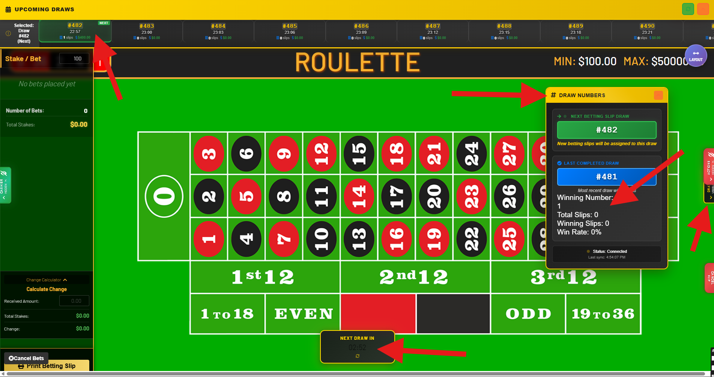
During Betting Process
-
Guide customer selections
Help customers understand bet types and assist with placement. -
Monitor bet totals
Keep track of total bet amounts to ensure customer has sufficient funds. -
Verify bet accuracy
Confirm each bet with the customer before finalizing. -
Watch for betting deadline
Monitor the countdown timer to ensure bets are placed before cutoff.
⏰ Betting Deadline Management
Betting typically closes 2-3 minutes before each draw. Always inform customers of remaining time and avoid accepting bets too close to the deadline.
6. Customer Interaction
Professional Customer Service
Excellent customer service is essential for a positive gaming experience and customer retention.
🤝 Customer Service Best Practices
- Greet customers warmly and professionally
- Explain bet types clearly for new players
- Confirm all bets before processing payment
- Handle disputes calmly and follow procedures
- Maintain confidentiality of customer information
Common Customer Questions
Q: "What are the odds for different bet types?"
A: Refer to the payout table. Straight-up bets pay 35:1, outside bets like red/black pay 1:1, and column bets pay 2:1.
Q: "Can I change my bet after placing it?"
A: Yes, bets can be modified or removed until betting closes for the draw, typically 2-3 minutes before the draw time.
Q: "How do I know if I won?"
A: Winning numbers are announced after each draw. You can check your slip against the results or ask for assistance.
Handling Difficult Situations
-
Stay calm and professional
Maintain composure even if customers become upset or frustrated. -
Listen actively
Let customers explain their concerns fully before responding. -
Follow procedures
Adhere to established protocols for disputes and escalations. -
Escalate when necessary
Contact supervisors for issues beyond your authority to resolve.
7. Cash Management & Cashier Functions
The system provides comprehensive cash management through the Cashier Info panel and left sidebar controls.
📸 Screenshot: Cash Management Panel
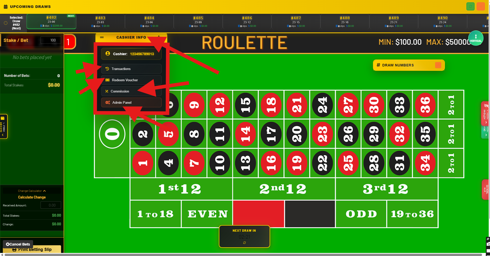
Daily Cash Operations
-
Starting balance verification
Verify your cash drawer matches the system balance at shift start. -
Transaction recording
All cash movements are automatically recorded in the system. -
Regular reconciliation
Periodically verify physical cash matches system records. -
End-of-shift reporting
Complete cash count and reconciliation before shift end.
Cash Transaction Types
- Bet Collection: Customer payments for betting slips
- Payout Processing: Winnings paid to customers
- Change Making: Providing change for customer payments
- Drawer Adjustments: Adding or removing cash as authorized
🔒 Security Protocols
Never leave your cash drawer unattended. Always lock your terminal when stepping away, even briefly. Report any discrepancies immediately to your supervisor.
8. Customer TV Display System
The customer TV display system provides real-time information to players about current draws, betting status, and results. Understanding how this system works helps you better assist customers and coordinate your cashier operations.
🖥️ TV Display Overview
The customer-facing TV display is accessible at: http://localhost:8080/slipp/tvdisplay/index.html
- Real-time draw information and countdown timers
- Live roulette wheel animation and results
- Betting status indicators (open/closed/drawing)
- Analytics and statistics for customer reference
- Previous winning numbers history
TV Display Interface Components
📊 Analytics Dashboard (Left Panel)
The left side of the TV display shows comprehensive betting analytics:
- Hot Numbers: Most frequently drawn numbers with statistics (e.g., #25, #3, #31, #6)
- Cold Numbers: Least frequently drawn numbers (e.g., #27, #17, #29, #30)
- Last 8 Spins: Recent winning numbers with color coding
- Color Distribution: RED (49%), BLACK (43%), GREEN (8%)
- Odd/Even Statistics: ODD (56%), EVEN (56%)
- High/Low Distribution: Low 1-18 (54%), High 19-36 (46%)
- Dozens Analysis: 1st 12 (37%), 2nd 12 (29%), 3rd 12 (34%)
- Columns Statistics: 1st (35%), 2nd (33%), 3rd (32%)
📸 Screenshot: TV Display - Betting Phase
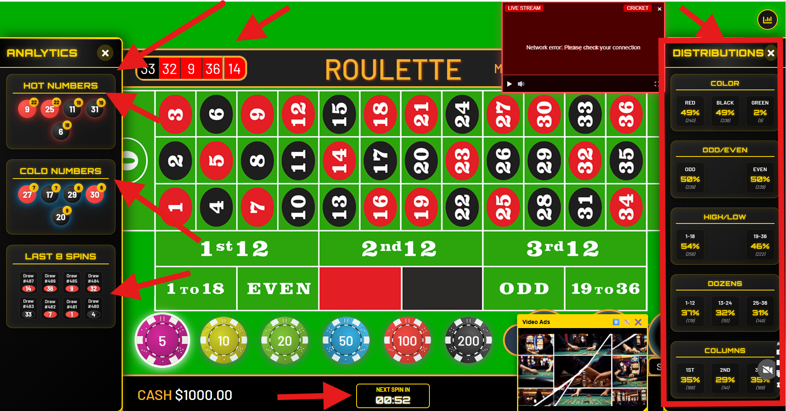
🎰 Central Roulette Display
The center area features the main roulette interface:
- Roulette Table: Full betting grid with numbers 0-36 in traditional layout
- Outside Betting Areas: 1st 12, 2nd 12, 3rd 12, 1 TO 18, EVEN, ODD, 19 TO 36
- Color Sections: Red and black number indicators
- Countdown Timer: "NEXT SPIN IN" with minutes and seconds display
- Current Cash Display: Shows available betting balance ($1000.00)
- Chip Denominations: Visual chips showing values (5, 10, 20, 50, 100, 200)
🎯 Live Roulette Wheel
During draws, the display shows an animated roulette wheel:
- Spinning Animation: Realistic wheel rotation during draws
- Ball Movement: Visual ball tracking around the wheel
- Winning Number Highlight: Clear indication of the winning number
- Result Display: Large winning number announcement (e.g., "32" with EVEN/HIGH indicators)
📸 Screenshot: TV Display - Results Phase
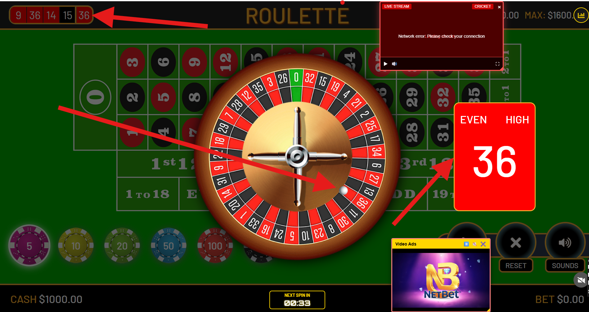
📈 Right Panel - Distributions
The right side displays betting distribution statistics:
- Color Distribution: Visual breakdown of red/black/green percentages
- Odd/Even Analysis: Statistical distribution of number parity
- High/Low Breakdown: 1-18 vs 19-36 number distribution
- Dozens Statistics: Performance of 1st, 2nd, and 3rd dozen bets
- Columns Analysis: Distribution across the three column bets
Customer Experience Workflow
Customer TV Display Cycle
🕐 Betting Open Phase
When betting is open, customers see:
- Active countdown timer showing time remaining to place bets
- Full roulette table available for reference
- Current statistics and hot/cold numbers
- Clear indication that betting is accepting
- Available cash balance display
⏰ Countdown Phase
As the betting deadline approaches:
- Timer counts down to zero (e.g., "NEXT SPIN IN 02:26")
- Visual urgency indicators may appear
- Customers know to finalize their bets
- Last chance for bet modifications
🚫 Betting Closed Phase
When betting closes:
- Clear "BETTING CLOSED" or similar indicator
- No more bets accepted
- Anticipation builds for the draw
- Preparation for wheel animation
🎡 Drawing Phase
During the actual draw:
- Animated roulette wheel appears and spins
- Ball animation shows realistic movement
- Suspenseful timing builds excitement
- All betting areas remain visible for reference
🎉 Results Phase
When results are announced:
- Large winning number display (e.g., "32")
- Color and parity indicators (EVEN, HIGH, RED/BLACK)
- Updated statistics reflect the new result
- Hot/cold numbers may change
- Preparation for next betting cycle
Cashier Integration with TV Display
🔄 Synchronization
The TV display is synchronized with your cashier POS system:
- Draw numbers match between systems
- Countdown timers are identical
- Betting status updates simultaneously
- Results appear at the same time
How Your Actions Affect Customer Display
-
When you process bets
Customer bets don't appear on the TV display, but the betting window remains open for all customers to see. -
When betting closes
The TV display automatically shows "betting closed" status, informing all customers simultaneously. -
When results are drawn
Winning numbers appear on both your POS system and the customer TV display at the same time. -
When new draws begin
Both systems reset and show the new draw number and countdown timer.
Customer Communication
Use the TV display to help customers:
- Timing: "You can see the countdown timer on the screen - we have 3 minutes left for this draw."
- Statistics: "The hot numbers are shown on the left side of the display if you're interested."
- Results: "The winning number will appear on the big screen when the draw completes."
- Next Draw: "Watch the screen for the next draw countdown to start."
🎥 Video: Complete TV Display Cycle
Customer Behavior Patterns
👀 How Customers Use the TV Display
- Monitoring Timing: Customers watch the countdown to know when to approach your window
- Studying Statistics: Many customers review hot/cold numbers before betting
- Waiting for Results: Customers gather around the display during draws
- Planning Next Bets: Using displayed statistics to plan future betting strategies
🎯 Optimal Customer Service
Understanding customer TV display usage helps you provide better service:
- Anticipate rushes when countdown shows 3-4 minutes remaining
- Be prepared to explain statistics shown on the display
- Direct customers to watch the display for results
- Use display timing to manage your workflow efficiently
⚠️ Important Notes
- The TV display is for customer information only - all official betting must be done through your POS system
- If customers report discrepancies between the TV display and your system, immediately contact technical support
- Never rely solely on the TV display for official draw information - always use your POS system as the authoritative source
9. Slip Printing & Validation
Betting slips serve as official records of customer bets and must be handled with care.
Printing Process
-
Review bet summary
Verify all bets are correct before printing. -
Collect payment
Ensure customer payment is received before printing slip. -
Print betting slip
Use the print function to generate the official betting slip. -
Verify slip details
Check that all information on the slip is accurate. -
Provide to customer
Hand the slip to the customer and explain key information.
🎥 Video: Complete Betting Transaction
Slip Information
Each betting slip contains:
- Draw Number: Identifies which game the bets apply to
- Bet Details: List of all bets with amounts and types
- Total Amount: Sum of all bets on the slip
- Timestamp: When the slip was generated
- Slip ID: Unique identifier for tracking
- Validation Code: Security code for verification
Reprinting Slips
Customers may request reprints of lost or damaged slips:
-
Verify customer identity
Confirm the customer's identity and right to the slip. -
Locate original slip
Use the slip ID or other identifying information to find the record. -
Use reprint function
Access the reprint feature in the system. -
Mark as reprint
Ensure the reprinted slip is clearly marked as a duplicate.
📸 Screenshot: Reprint Interface
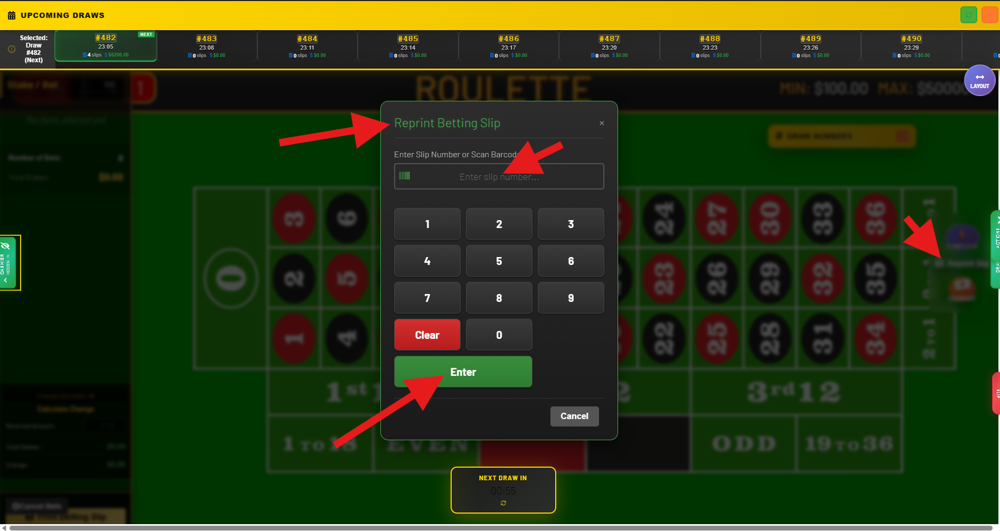
10. Troubleshooting
Quick solutions to common issues that may arise during operation.
Common Issues and Solutions
🖥️ System Not Loading
Symptoms:
Page won't load, blank screen, or error messages
Solutions:
- Refresh the browser page (F5 or Ctrl+R)
- Check internet connection
- Clear browser cache and cookies
- Try a different browser
- Contact IT support if problem persists
🖨️ Printer Not Working
Symptoms:
Slips not printing, printer errors, or poor print quality
Solutions:
- Check printer power and connections
- Verify paper supply and alignment
- Clear any paper jams
- Restart printer and try again
- Use backup printer if available
💰 Cash Balance Discrepancy
Symptoms:
Physical cash doesn't match system balance
Immediate Actions:
- Stop all transactions immediately
- Recount physical cash carefully
- Review recent transaction history
- Document the discrepancy amount
- Contact supervisor immediately
🎲 Betting Closed Unexpectedly
Symptoms:
Cannot place bets, "betting closed" message appears
Solutions:
- Check draw countdown timer
- Verify current draw status
- Wait for next draw to open
- Explain timing to customer
- Offer to place bets on next available draw
Emergency Procedures
🚨 System Emergency Protocol
- Secure cash drawer - Lock and secure all cash immediately
- Document current state - Note any pending transactions
- Inform customers - Explain situation professionally
- Contact supervisor - Report issue immediately
- Follow backup procedures - Use manual processes if authorized
Commission System Issues
❌ Problem: Commission interface won't load or shows error message
Solution:
- Check internet connection - Verify network connectivity
- Clear browser cache - Refresh browser and clear cached data
- Try direct URL - Navigate directly to https://roulette.aruka.app/slipp/commission.php
- Verify login status - Ensure you're properly logged into the system
- Contact IT support - Report persistent access issues
❌ Problem: Commission amounts appear incorrect or don't match expectations
Solution:
- Verify calculation - Check: Total Bets × Commission Rate = Expected Commission
- Review time period - Ensure you're viewing the correct date range
- Check for excluded bets - Remember cancelled/voided bets don't count
- Confirm commission rate - Verify your current rate with supervisor
- Document discrepancy - Record specific details and report to management
❌ Problem: Commission chart shows no data or incomplete information
Solution:
- Switch time periods - Try different tabs (Hour, Day, Week, Month)
- Check date range - Ensure you're looking at periods with betting activity
- Refresh the page - Reload to update data display
- Verify bet processing - Confirm bets were successfully processed in main POS
- Wait for data sync - Allow time for real-time updates to populate
Transaction Management Issues
❌ Problem: Transaction interface loads slowly or times out
Solution:
- Check internet connection - Verify stable network connectivity
- Reduce date range - Use smaller time periods to improve loading performance
- Clear browser cache - Remove cached data and refresh the page
- Close other browser tabs - Free up system resources
- Try direct URL access - Navigate directly to the transaction interface
- Contact IT support - Report persistent performance issues
❌ Problem: Cannot find a specific transaction that should exist
Solution:
- Verify search criteria - Double-check slip number, date, and amount details
- Expand date range - Search broader time periods in case of date confusion
- Clear all filters - Remove existing filters and search again
- Check transaction status - Look for cancelled or voided transactions
- Verify cashier account - Ensure transaction was processed under your account
- Contact supervisor - Request assistance with transaction lookup
❌ Problem: Transaction statuses not updating or showing incorrect information
Solution:
- Refresh the page - Use browser refresh or the "Refresh" button
- Check draw completion - Verify that the associated draw has finished
- Wait for processing - Allow time for automatic status updates
- Compare with main POS - Cross-reference status with main betting interface
- Clear browser cache - Remove cached data that might show outdated information
- Report data inconsistencies - Document and report any persistent status errors
❌ Problem: Performance metrics don't match expected calculations
Solution:
- Verify time period - Ensure you're viewing the correct date range
- Check for excluded transactions - Remember cancelled bets don't count
- Review calculation method - Understand how ROI and win rates are calculated
- Compare with commission data - Cross-reference with commission interface
- Document discrepancies - Record specific differences and report to management
- Request data audit - Ask supervisor to verify calculation accuracy
Voucher Redemption Issues
❌ Problem: Voucher code appears valid but system rejects it
Solution:
- Verify code entry - Check for typos, extra spaces, or incorrect characters
- Check code format - Ensure code matches expected format patterns
- Confirm voucher status - Verify voucher hasn't been used or expired
- Try different browser - Test in another browser or clear cache
- Check system connectivity - Ensure stable internet connection
- Contact supervisor - Escalate for manual verification and processing
❌ Problem: Voucher redemption interface won't load or shows errors
Solution:
- Refresh the page - Use browser refresh or F5 key
- Clear browser cache - Remove cached data and cookies
- Check URL accuracy - Verify correct redemption page URL
- Try direct navigation - Access via direct URL rather than menu links
- Verify login status - Ensure you're properly logged into the system
- Contact IT support - Report persistent interface issues
❌ Problem: Credits don't appear in customer account after successful redemption
Solution:
- Wait for processing - Allow time for system synchronization
- Refresh account balance - Update customer account display
- Check transaction history - Verify redemption appears in transaction records
- Verify customer account - Ensure credits were added to correct account
- Document the issue - Record voucher code, amount, and customer details
- Contact supervisor - Request manual credit adjustment if needed
❌ Problem: Customer claims voucher was already used but they haven't redeemed it
Solution:
- Verify customer identity - Confirm customer account and personal details
- Check redemption history - Review when and where voucher was used
- Investigate voucher source - Determine how customer obtained the voucher
- Look for duplicate codes - Check if multiple customers have same code
- Document the dispute - Record all details for investigation
- Escalate to management - Involve supervisor for dispute resolution
Customer Cashout Processing Issues
❌ Problem: Betting slip number won't verify or shows as invalid
Solution:
- Verify number entry - Double-check slip number was entered correctly
- Check slip condition - Ensure slip isn't damaged or illegible
- Confirm slip age - Verify slip is within 7-day validity period
- Try manual entry - If using scanner, try typing number manually
- Check system connectivity - Ensure stable connection to verification system
- Contact supervisor - Escalate for manual verification if slip appears legitimate
❌ Problem: Cashout modal won't open or displays incorrectly
Solution:
- Refresh the page - Use browser refresh or F5 key
- Clear browser cache - Remove cached data and cookies
- Check browser compatibility - Ensure using supported browser version
- Disable browser extensions - Turn off ad blockers or other extensions
- Try different browser - Test in alternative browser if available
- Contact IT support - Report persistent interface issues
❌ Problem: Payout calculation appears incorrect or doesn't match expected winnings
Solution:
- Review bet details - Confirm bet types and amounts on original slip
- Check winning number - Verify the drawn number matches system display
- Understand payout rates - Confirm payout multipliers for different bet types
- Review bet results - Check which specific bets won or lost
- Document discrepancy - Record slip details and expected vs. actual payout
- Escalate to supervisor - Request manual calculation verification
❌ Problem: Receipt won't generate or print after successful cashout
Solution:
- Check printer status - Ensure printer is online and has paper
- Verify receipt settings - Confirm receipt generation is enabled
- Try manual print - Use browser print function if automatic fails
- Document transaction - Record cashout details manually if needed
- Provide customer service - Explain situation and offer alternatives
- Contact IT support - Report receipt generation issues
11. Security & Best Practices
Security is paramount in casino operations. Following these practices protects both you and the business.
Login Security
- Never share your username or password
- Log out completely when leaving your station
- Use strong passwords and change them regularly
- Report any suspicious login attempts
Cash Security
- Keep cash drawer locked when not in use
- Count cash discreetly, away from customer view
- Never leave cash unattended
- Follow proper cash handling procedures
- Report any cash discrepancies immediately
Customer Information
- Maintain confidentiality of all customer data
- Verify customer identity for sensitive requests
- Never discuss customer bets with other customers
- Follow privacy regulations and company policies
🔐 Security Checklist
Daily security practices:
- ✅ Secure login with personal credentials
- ✅ Verify cash drawer balance at start
- ✅ Lock terminal when stepping away
- ✅ Handle customer information confidentially
- ✅ Report any security concerns immediately
- ✅ Complete proper logout at shift end
12. Keyboard Shortcuts
Learn these shortcuts to work more efficiently and serve customers faster.
General Navigation
- F5 - Refresh page
- Ctrl + R - Refresh page (alternative)
- Ctrl + L - Focus address bar
- Alt + Tab - Switch between windows
Betting Operations
- 1-9 - Quick stake amounts
- Enter - Confirm bet placement
- Escape - Cancel current action
- Ctrl + P - Print betting slip
System Functions
- Ctrl + Shift + L - Logout
- F1 - Help documentation
- Ctrl + Z - Undo last action
13. Frequently Asked Questions
System Operation
Q: What should I do if the system freezes?
A: First try refreshing the page. If that doesn't work, close and reopen your browser. Contact IT support if the problem continues.
Q: Can I process bets for multiple customers at once?
A: No, complete each customer's transaction fully before starting the next one to avoid confusion and errors.
Q: How long do I have to place bets before a draw?
A: Betting typically closes 2-3 minutes before each draw. Watch the countdown timer and inform customers of remaining time.
Customer Service
Q: What if a customer claims their slip is wrong?
A: Review the slip details with the customer, check the system records, and contact a supervisor if you cannot resolve the issue.
Q: Can customers change bets after printing a slip?
A: Generally no, but follow your casino's specific policy. Some venues allow cancellations within a short time frame.
Q: What if a customer loses their betting slip?
A: You can reprint slips if you can verify the customer's identity and locate the original transaction in the system.
Technical Issues
Q: The printer is out of paper. What should I do?
A: Replace the paper following the printer manual instructions. If you're unsure, ask a colleague or supervisor for help.
Q: I accidentally logged out. Will I lose current bets?
A: Unsaved bets may be lost. Always complete transactions before logging out. Contact IT support if you need to recover data.
Commission Management
Q: How often are commissions calculated and updated?
A: Commissions are calculated in real-time as you process bets. The commission interface updates immediately after each successful bet transaction, and daily totals are finalized at the end of each business day.
Q: Why doesn't my commission match what I calculated manually?
A: Only successfully processed and paid bets count toward commission. Cancelled bets, voided transactions, or failed payments are excluded. Also verify you're using the correct commission rate, which may vary based on performance or time periods.
Q: Can I access commission information from previous months?
A: Yes, the commission interface provides historical data. Use the "Month" and "Year" tabs in the chart view, and scroll through the commission history table to see detailed records from previous periods.
Q: What should I do if I notice an error in my commission calculation?
A: Document the discrepancy with specific details (date, expected amount, actual amount shown) and contact your supervisor immediately. Do not attempt to adjust commission figures yourself - only management can authorize commission corrections.
Q: How do commission rates get determined?
A: Commission rates are set by management based on factors such as experience level, performance metrics, bet volume processed, and casino policies. Rates may be reviewed periodically during performance evaluations.
Transaction Management
Q: How far back can I view my transaction history?
A: The transaction management system typically maintains records for the current fiscal year and previous year. For older records, contact your supervisor or IT support. Use date filters to navigate through different time periods efficiently.
Q: What should I do if I can't find a specific transaction a customer is asking about?
A: First, verify the slip number, date, and approximate bet amount with the customer. Use multiple search criteria (slip number, date range, amount range) in the transaction interface. If still not found, check if the transaction was processed by a different cashier or contact your supervisor for assistance.
Q: Why do some transactions show "pending" status for a long time?
A: Pending status usually indicates the draw hasn't completed yet or there's a technical delay in result processing. Check the draw time and current time. If the draw should have completed, refresh the page or contact IT support if the status doesn't update within a reasonable timeframe.
Q: How do I generate a report of my transactions for a specific time period?
A: Use the date range filters in the transaction interface to select your desired time period. You can then use your browser's print function or screenshot capability to document the filtered results. For official reports, contact your supervisor about approved reporting procedures.
Q: What's the difference between "Total Bets" in transactions and commission calculations?
A: Both should match, but transaction "Total Bets" includes all processed bets while commission calculations may exclude cancelled or voided transactions. If you notice discrepancies, verify that all transactions have proper status indicators and report any inconsistencies to management.
Voucher Redemption
Q: What should I do if a customer's voucher code doesn't work?
A: First, verify the code was entered correctly without typos. Check if the voucher has expired or was already used. If the code appears valid but still fails, contact your supervisor for assistance. Document the voucher code and customer information for follow-up investigation.
Q: How can I tell if a voucher is legitimate or potentially fraudulent?
A: Legitimate vouchers follow standard format patterns, come from official sources, and validate successfully in the system. Be suspicious of handwritten codes, unusual formatting, customers who can't explain how they got the voucher, or multiple high-value redemptions from the same customer.
Q: What's the maximum voucher value I can process without supervisor approval?
A: This varies by casino policy, but typically vouchers over $500 may require supervisor approval. Check with your supervisor about your specific authorization limits and when escalation is required for high-value voucher redemptions.
Q: Can customers use multiple vouchers at the same time?
A: This depends on the specific voucher terms and casino policy. Some promotions allow multiple voucher usage while others restrict customers to one voucher per account or time period. Always check the voucher terms and ask your supervisor if you're unsure.
Q: What should I do if the voucher redemption system is down or not working?
A: Document the customer's voucher information (code, value, customer details) and contact IT support immediately. Follow your casino's backup procedures for voucher redemption, which may include manual processing with supervisor approval and later system entry when service is restored.
Customer Cashout Processing
Q: What should I do if a customer's betting slip number doesn't verify in the cashout system?
A: First, double-check that you entered the slip number correctly. Verify the slip appears legitimate and hasn't been damaged. If the number still doesn't verify, check if the slip has expired (over 7 days old). Contact your supervisor if the slip appears valid but won't verify in the system.
Q: How do I handle a customer who claims their losing slip should have won?
A: Politely show the customer the bet results display in the cashout system, explaining which number won and how their bets didn't match. Refer to the original betting slip to confirm their bet selections. If the customer remains unsatisfied, escalate to your supervisor for resolution.
Q: What's the maximum payout amount I can process without supervisor approval?
A: This varies by casino policy, but typically large payouts (often $1,000 or more) require supervisor approval. Check with your supervisor about your specific authorization limits and when escalation is required for high-value cashouts.
Q: What should I do if I suspect a betting slip might be fraudulent?
A: Do not process the cashout. Politely tell the customer you need to verify the slip with your supervisor. Look for signs like poor print quality, altered numbers, or unusual paper. Document the slip details and contact your supervisor immediately for guidance.
Q: How long are betting slips valid for cashout, and what happens to expired slips?
A: Betting slips are valid for 7 days after purchase. The system will automatically reject expired slips. Explain the policy to customers and refer them to management if they have concerns about expired winning slips. Some casinos may have procedures for handling expired winners.
📞 Support Contacts
Keep these contact numbers readily available:
- IT Support: Extension 1234
- Supervisor: Extension 5678
- Security: Extension 9999
- Emergency: 911
14. Commission Management
The commission management system allows cashiers to track their earnings from betting activities. This system provides detailed insights into your commission performance and helps you monitor your daily, weekly, and monthly earnings.
💰 Commission System Overview
The commission interface is accessible at: https://roulette.aruka.app/slipp/commission.php
- Track total bets processed and commission earned
- View commission rates and calculation methods
- Generate detailed commission reports
- Monitor performance across different time periods
- Access historical commission data
Accessing the Commission Interface
You can access the commission system through multiple methods:
-
From the main POS system
Click on "Commission" in the Cashier Info dropdown panel in your main betting interface. -
Direct URL access
Navigate directly to https://roulette.aruka.app/slipp/commission.php using your web browser. -
When to check commissions
Review your commission status at the end of each shift, weekly for performance tracking, or when requested by management.
📸 Screenshot: Commission Interface Overview
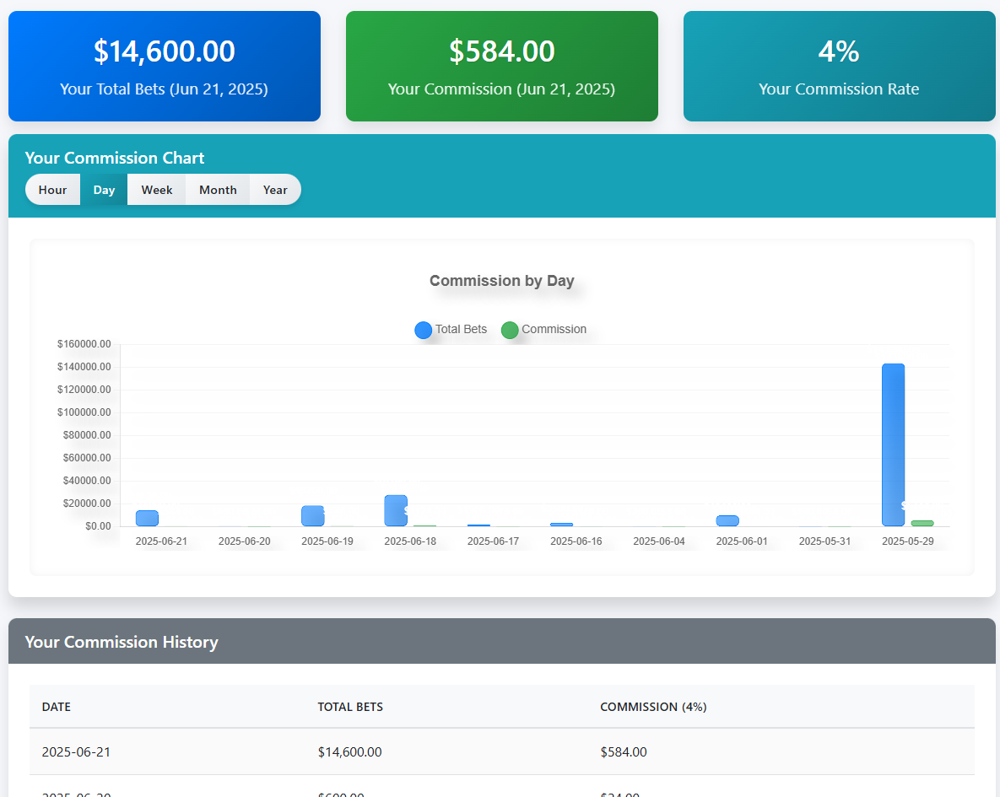
Interface Components
📊 Commission Summary Cards
The top section displays three key performance indicators:
- Your Total Bets (Blue Card): Shows the total amount of bets you've processed (e.g., $14,600.00) for the selected period (Jun 21, 2025)
- Your Commission (Green Card): Displays your total commission earned (e.g., $584.00) for the same period
- Your Commission Rate (Teal Card): Shows your current commission percentage rate (e.g., 4%)
💡 Understanding Commission Rates
Commission rates may vary based on:
- Your experience level and performance
- Volume of bets processed
- Time of day or special promotions
- Management discretion and casino policies
📈 Commission Chart
The interactive chart section provides detailed performance visualization:
- Time Period Tabs: Switch between Hour, Day, Week, Month, and Year views
- Dual Data Display:
- Blue bars represent "Total Bets" processed
- Green dots represent "Commission" earned
- Date Range: X-axis shows specific dates or time periods
- Amount Scale: Y-axis displays monetary values from $0 to maximum amounts
- Interactive Features: Hover over data points for detailed information
📋 Commission History Table
The bottom section shows detailed historical data:
- DATE Column: Specific dates of commission activity (e.g., 2025-06-21)
- TOTAL BETS Column: Amount of bets processed on each date (e.g., $14,600.00)
- COMMISSION (4%) Column: Commission earned with rate indicator (e.g., $584.00)
- Sorting and Filtering: Click column headers to sort data chronologically or by amount
Commission Calculation Process
🧮 How Commissions Are Calculated
-
Base calculation
Commission = Total Bets Processed × Commission Rate
Example: $14,600.00 × 4% = $584.00 -
Real-time tracking
Each bet you process is automatically added to your total bets for commission calculation. -
Daily accumulation
Commissions accumulate throughout your shift and are calculated at the end of each day. -
Rate application
Your current commission rate is applied to all qualifying bets processed during your shift.
⚠️ Commission Calculation Notes
- Only successfully processed and paid bets count toward commission
- Cancelled or voided bets are excluded from commission calculations
- Commission rates may change based on performance metrics
- Special promotions or bonuses may affect commission calculations
Cashier Workflow for Commission Management
📅 Daily Commission Check
-
End-of-shift review
Access the commission interface at the end of your shift to review daily performance. -
Verify total bets
Compare the "Total Bets" amount with your shift activity to ensure accuracy. -
Check commission calculation
Verify that commission amount matches: Total Bets × Commission Rate. -
Review chart data
Use the "Day" view to see hourly performance throughout your shift. -
Report discrepancies
Contact your supervisor immediately if you notice any calculation errors.
📊 Weekly Performance Analysis
-
Switch to weekly view
Click the "Week" tab in the commission chart to see 7-day performance. -
Identify trends
Look for patterns in your daily performance and commission earnings. -
Compare periods
Use the chart to compare current week performance with previous weeks. -
Set performance goals
Use historical data to establish realistic targets for improvement.
📈 Monthly Reporting
-
Generate monthly summary
Use the "Month" view to see complete monthly commission performance. -
Review commission history
Scroll through the history table to see detailed daily breakdowns. -
Calculate averages
Determine your average daily commission and total monthly earnings. -
Prepare for reviews
Use this data for performance reviews or commission discussions with management.
Integration with Main POS System
🔄 Real-Time Synchronization
The commission system is fully integrated with your main POS betting interface:
- Automatic bet tracking: Every bet you process is immediately recorded for commission calculation
- Live updates: Commission totals update in real-time as you process customer bets
- Unified login: Use the same credentials for both POS and commission systems
- Consistent data: All systems share the same database for accurate reporting
💼 Daily Operations Impact
Understanding how commission affects your daily work:
- Performance motivation: Higher bet volumes lead to increased commission earnings
- Customer service focus: Better service encourages repeat customers and larger bets
- Accuracy importance: Mistakes in bet processing can affect commission calculations
- Shift planning: Busy periods offer opportunities for higher commission earnings
🎯 Best Practices for Commission Optimization
- Efficient processing: Quick, accurate bet processing serves more customers
- Customer education: Help customers understand betting options to increase engagement
- Professional service: Excellent customer service builds loyalty and repeat business
- System knowledge: Understanding all betting options helps customers make informed choices
- Regular monitoring: Check commission progress throughout your shift to track performance
🏆 Commission Success Tips
- Greet every customer warmly to encourage betting activity
- Explain betting options clearly to help customers feel confident
- Process bets quickly and accurately to serve more customers
- Monitor busy periods and prepare for higher volume
- Use commission data to identify your most productive times
- Maintain professional standards to build customer trust
15. Transaction Management
The transaction management system provides cashiers with comprehensive access to their betting transaction history. This powerful interface allows you to search, filter, and review all betting activities processed through your account, supporting audit requirements and daily reconciliation tasks.
📊 Transaction System Overview
The transaction interface is accessible at: https://roulette.aruka.app/slipp/my_transactions_new.php
- View complete betting transaction history
- Search and filter transactions by multiple criteria
- Access detailed bet information and customer data
- Monitor transaction statuses and outcomes
- Generate reports for audit and reconciliation purposes
- Track performance metrics and betting patterns
Accessing the Transaction Interface
You can access the transaction management system through several methods:
-
From the main POS system
Click on "My Transactions" in the navigation menu or cashier dashboard. -
Direct URL access
Navigate directly to https://roulette.aruka.app/slipp/my_transactions_new.php using your web browser. -
When to use transaction management
Access for daily reconciliation, customer inquiries, audit requirements, dispute resolution, or performance analysis.
📸 Screenshot: Transaction Management Interface
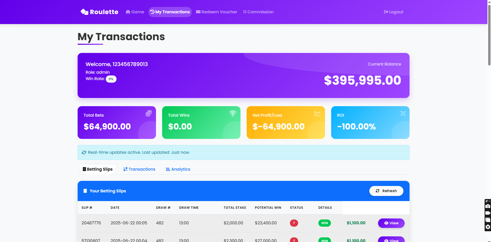
Interface Components
👤 User Welcome Panel
The top purple header section displays essential account information:
- Welcome Message: Shows your user ID (e.g., "Welcome, 123456789013")
- Role Indicator: Displays your account role (e.g., "Role: admin")
- Win Rate Badge: Shows your current win rate percentage with color coding
- Current Balance: Displays your account balance (e.g., "$395,995.00") in large, prominent text
📈 Performance Metrics Cards
Four color-coded cards provide key performance indicators:
- Total Bets (Purple Card): Shows total amount of bets processed (e.g., "$64,900.00")
- Total Wins (Green Card): Displays total winnings amount (e.g., "$0.00")
- Net Profit/Loss (Orange Card): Shows net financial result (e.g., "-$64,900.00")
- ROI (Blue Card): Displays Return on Investment percentage (e.g., "-100.00%")
💡 Understanding Performance Metrics
Performance metrics help you understand:
- Betting Volume: Total amount of customer bets you've processed
- Win Tracking: Customer winnings paid out through your terminal
- Net Position: Overall financial impact of betting activity
- Efficiency Metrics: ROI and win rate indicators for performance analysis
🔄 Real-Time Updates
The system provides live data synchronization:
- Update Notification: Blue banner shows "Real-time updates active. Last updated: Just now"
- Automatic Refresh: Data updates automatically as new transactions are processed
- Manual Refresh: "Refresh" button available for immediate data updates
- Live Status: Transaction statuses update in real-time as draws complete
📋 Navigation Tabs
Three main sections organize different types of data:
- Betting Slips: Detailed view of individual betting slips and customer transactions
- Transactions: Comprehensive transaction history with filtering and search capabilities
- Analytics: Performance analysis tools and reporting features
📊 Transaction Table
The detailed transaction table displays comprehensive bet information:
- SLIP #: Unique transaction identifier (e.g., "20487778", "57130907")
- DATE: Transaction date and time (e.g., "2025-06-22 00:05")
- DRAW #: Roulette draw number (e.g., "482")
- DRAW TIME: Time when the draw occurred (e.g., "14:22")
- TOTAL STAKE: Amount bet by customer (e.g., "$2,000.00", "$2,300.00")
- POTENTIAL WIN: Maximum possible payout (e.g., "$23,400.00", "$27,000.00")
- STATUS: Transaction outcome with color-coded indicators:
- Red circle (●) = Loss
- Green "WIN" badge = Win
- Other status indicators as applicable
- DETAILS: Action buttons including "View" for detailed transaction information
Transaction Search and Filtering
🔍 Search Functionality
The transaction interface provides multiple search options:
-
Slip Number Search
Enter specific slip numbers in the search field to locate individual transactions quickly. -
Date Range Filtering
Use date selectors to filter transactions within specific time periods (daily, weekly, monthly). -
Amount Filtering
Filter by bet amounts, stake ranges, or potential win amounts to find specific transaction types. -
Status Filtering
Filter by transaction outcomes (wins, losses, pending) to analyze specific result types. -
Draw Number Search
Search by specific draw numbers to find all bets placed on particular roulette draws.
📅 Advanced Filtering Options
Utilize advanced filtering for detailed analysis:
- Time Period Selection: Filter by hour, day, week, month, or custom date ranges
- Bet Type Filtering: Separate different types of roulette bets (straight, split, corner, etc.)
- Customer Information: Search by customer details when available
- Transaction Amount Ranges: Set minimum and maximum stake amounts for filtering
- Performance Metrics: Filter by win/loss ratios or ROI ranges
⚠️ Search and Filter Best Practices
- Use specific date ranges to improve search performance and accuracy
- Combine multiple filters for more precise results
- Clear filters between different search sessions to avoid confusion
- Document search criteria when generating reports for audit purposes
- Verify search results match your intended criteria before proceeding
Transaction Details and Records
📄 Understanding Transaction Data
Each transaction record contains comprehensive information:
- Transaction Identification:
- Unique slip number for tracking and reference
- Date and time stamps for chronological organization
- Draw number linking to specific roulette results
- Financial Information:
- Total stake amount paid by customer
- Potential win calculation based on bet type and odds
- Actual payout amount (for winning bets)
- Commission earned from the transaction
- Bet Details:
- Specific numbers or combinations bet
- Bet type classification (straight, split, corner, etc.)
- Odds and payout ratios applied
- Multiple bet combinations if applicable
🔍 Viewing Detailed Transaction Information
-
Click "View" button
In the DETAILS column, click the purple "View" button to access complete transaction details. -
Review bet specifics
Examine the detailed bet breakdown, including all numbers played and bet types. -
Verify calculations
Confirm that stake amounts, odds, and potential payouts are calculated correctly. -
Check customer information
Review any available customer details associated with the transaction. -
Document findings
Note any discrepancies or important information for follow-up actions.
📊 Interpreting Transaction Statuses
Transaction status indicators provide immediate outcome information:
- Red Circle (●): Indicates a losing bet - customer stake was lost
- Green "WIN" Badge: Indicates a winning bet - customer received payout
- Pending Status: Bet placed but draw not yet completed
- Cancelled Status: Transaction was voided or cancelled before draw
- Processing Status: Payment or payout currently being processed
Integration with Main POS System
🔄 Real-Time Synchronization
The transaction management system maintains seamless integration with your main POS interface:
- Automatic Transaction Recording: Every bet processed in the main POS is immediately recorded in transaction history
- Live Status Updates: Transaction statuses update automatically as draws complete and results are determined
- Unified Data Source: Both systems access the same database ensuring data consistency
- Cross-Reference Capability: Transaction records can be cross-referenced with commission calculations and daily reports
💼 Daily Operations Support
Transaction management supports essential daily cashier activities:
- Shift Reconciliation: Review all transactions processed during your shift for accuracy
- Customer Service: Quickly locate customer transactions for inquiries or disputes
- Audit Compliance: Provide detailed transaction records for audit and compliance requirements
- Performance Monitoring: Track your daily betting volume and transaction efficiency
- Error Resolution: Identify and document any transaction discrepancies for correction
📈 Commission Tracking Integration
Transaction data directly supports commission calculations:
- Commission Base Calculation: Total stakes from transaction records form the basis for commission calculations
- Qualifying Transaction Identification: Only successfully processed transactions count toward commission
- Real-Time Commission Updates: Commission totals update as new transactions are recorded
- Historical Commission Verification: Use transaction history to verify commission calculations for any time period
🎯 Best Practices for Transaction Management
- Regular Review: Check transaction records at least once per shift for accuracy
- Immediate Investigation: Address any discrepancies or unusual transactions immediately
- Documentation: Keep notes on any transaction issues or customer interactions
- Audit Preparation: Maintain organized records and be prepared to explain any transactions
- Customer Service: Use transaction details to provide accurate information to customers
- Performance Analysis: Review transaction patterns to identify opportunities for improvement
🏆 Transaction Management Success Tips
- Familiarize yourself with all transaction table columns and their meanings
- Use filtering options to quickly locate specific transactions during customer inquiries
- Regularly verify that your transaction totals match your shift activity
- Keep transaction records organized for easy reference during audits
- Use the "View" details function to understand complex bet combinations
- Monitor real-time updates to stay current with transaction statuses
- Cross-reference transaction data with commission reports for accuracy
16. Voucher Redemption
The voucher redemption system enables cashiers to process customer voucher codes, validate promotional offers, and add credits to customer accounts. This system is essential for handling promotional campaigns, customer rewards, and special bonus offers while maintaining security and fraud prevention protocols.
🎫 Voucher Redemption System Overview
The voucher redemption interface is accessible at: https://roulette.aruka.app/slipp/redeem_voucher.php
- Process customer voucher codes and promotional offers
- Validate voucher authenticity and eligibility requirements
- Add credits directly to customer accounts
- Track voucher usage and prevent duplicate redemptions
- Handle various voucher types and promotional campaigns
- Maintain security protocols and fraud prevention measures
Accessing the Voucher Redemption Interface
You can access the voucher redemption system through multiple methods:
-
From the main navigation menu
Click on "Redeem Voucher" in the top navigation bar of the roulette system. -
Direct URL access
Navigate directly to https://roulette.aruka.app/slipp/redeem_voucher.php using your web browser. -
When to use voucher redemption
Process customer vouchers during account setup, promotional campaigns, customer service requests, or special bonus distributions.
📸 Screenshot: Voucher Redemption Interface
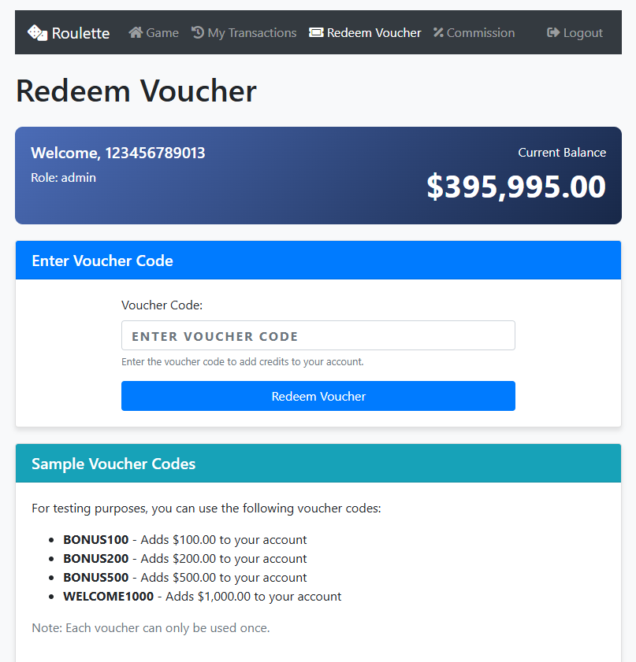
Interface Components
👤 User Welcome Header
The blue header section displays essential account information:
- Welcome Message: Shows the user ID (e.g., "Welcome, 123456789013")
- Role Display: Indicates account role (e.g., "Role: admin")
- Current Balance: Shows account balance prominently (e.g., "$395,995.00")
- Balance Context: Displays "Current Balance" label for clarity
🎫 Voucher Code Input Section
The main redemption area provides voucher processing functionality:
- Section Header: Blue "Enter Voucher Code" banner clearly identifies the input area
- Voucher Code Field: Text input field with placeholder "ENTER VOUCHER CODE"
- Input Instructions: Guidance text "Enter the voucher code to add credits to your account"
- Redeem Button: Blue "Redeem Voucher" button to process the entered code
- Input Validation: Real-time validation of voucher code format and structure
📋 Sample Voucher Codes Section
The teal section provides testing and reference information:
- Section Title: "Sample Voucher Codes" clearly identifies the reference area
- Testing Purpose: "For testing purposes, you can use the following voucher codes:"
- Voucher Examples: List of sample codes with values:
- BONUS100 - Adds $100.00 to your account
- BONUS200 - Adds $200.00 to your account
- BONUS500 - Adds $500.00 to your account
- WELCOME1000 - Adds $1,000.00 to your account
- Usage Limitation: "Note: Each voucher can only be used once" warning
💡 Understanding Voucher Types
Different voucher categories serve various purposes:
- Bonus Vouchers: Standard promotional credits (BONUS100, BONUS200, BONUS500)
- Welcome Vouchers: New customer incentives (WELCOME1000)
- Promotional Codes: Campaign-specific offers with time limitations
- Loyalty Rewards: Customer retention and appreciation vouchers
- Compensation Vouchers: Service recovery and customer service credits
Voucher Processing Workflow
🔍 Step-by-Step Redemption Process
-
Customer presents voucher
Customer provides voucher code verbally, on paper, or through digital means (email, SMS, app). -
Verify customer identity
Confirm customer account details and eligibility for voucher redemption. -
Enter voucher code
Type the voucher code exactly as provided into the "ENTER VOUCHER CODE" field. -
Review code format
Ensure the code follows expected format patterns and contains no typos. -
Click "Redeem Voucher"
Press the blue redemption button to initiate the validation and processing. -
Confirm successful redemption
Verify that credits are added to the customer account and balance updates correctly. -
Provide confirmation to customer
Inform customer of successful redemption and new account balance.
🎯 Different Voucher Type Processing
Handle various voucher categories with appropriate procedures:
- Standard Bonus Vouchers:
- Process immediately without additional verification
- Standard credit amounts ($100, $200, $500)
- Single-use limitation applies
- High-Value Vouchers:
- Verify customer identity more thoroughly
- May require supervisor approval for amounts over $500
- Document redemption details for audit purposes
- Promotional Campaign Vouchers:
- Check campaign validity dates and terms
- Verify customer meets campaign requirements
- Apply any campaign-specific restrictions
- Compensation Vouchers:
- Verify authorization from management
- Document reason for compensation
- Follow special handling procedures if applicable
Validation and Security
🔒 Voucher Authentication Process
The system employs multiple security measures to prevent fraud:
- Code Format Validation: Voucher codes must match expected patterns and structures
- Database Verification: Codes are checked against the valid voucher database
- Single-Use Enforcement: Each voucher can only be redeemed once to prevent duplicate usage
- Expiration Date Checking: System automatically validates voucher expiration dates
- Account Eligibility: Verifies customer account status and redemption eligibility
- Real-Time Processing: Immediate validation prevents delayed fraud detection
🛡️ Fraud Prevention Measures
Implement security protocols to protect against voucher fraud:
-
Verify voucher source
Confirm how the customer obtained the voucher (official promotion, email, legitimate source). -
Check for tampering
Examine physical vouchers for signs of alteration or forgery. -
Validate customer information
Ensure customer details match voucher eligibility requirements. -
Monitor redemption patterns
Watch for suspicious activity like multiple high-value redemptions. -
Document unusual requests
Record any suspicious voucher redemption attempts for security review. -
Escalate concerns
Contact supervisor immediately if fraud is suspected.
⚠️ Security Alert Indicators
Watch for these red flags that may indicate fraudulent voucher activity:
- Customer cannot explain how they obtained the voucher
- Voucher code appears handwritten or altered
- Customer attempts to redeem multiple high-value vouchers
- Voucher format doesn't match standard promotional materials
- Customer becomes agitated when asked for verification
- System shows voucher was already redeemed
- Voucher code contains unusual characters or formatting
📅 Expiration Date Management
Handle voucher expiration dates properly:
- Automatic Validation: System checks expiration dates automatically during redemption
- Grace Period Policy: Understand casino policy on expired vouchers (if any grace period applies)
- Customer Communication: Clearly explain expiration policies to customers
- Alternative Solutions: Offer alternatives for expired vouchers when authorized
- Documentation: Record expired voucher attempts for promotional analysis
Integration with Main POS System
🔄 Real-Time Account Integration
The voucher redemption system maintains seamless integration with customer accounts:
- Immediate Balance Updates: Credits are added to customer accounts instantly upon successful redemption
- Transaction Recording: All voucher redemptions are recorded in the transaction management system
- Account History: Voucher redemptions appear in customer account history for reference
- Balance Synchronization: Account balances update across all system interfaces simultaneously
💼 Daily Operations Integration
Voucher redemption supports essential cashier activities:
- Customer Service: Quickly process promotional offers and customer rewards
- Account Management: Add credits to customer accounts for various business purposes
- Promotional Support: Handle marketing campaign vouchers and special offers
- Problem Resolution: Process compensation vouchers for service recovery
- Audit Trail: Maintain complete records of all voucher redemptions for compliance
📊 Reporting and Tracking
Voucher redemption data supports business intelligence and analysis:
- Redemption Tracking: Monitor voucher usage rates and campaign effectiveness
- Customer Behavior: Analyze customer response to promotional offers
- Fraud Detection: Track patterns that may indicate fraudulent activity
- Financial Reconciliation: Account for promotional costs and customer credits
- Campaign Analysis: Evaluate success of different voucher types and values
🎯 Best Practices for Voucher Redemption
- Accurate Code Entry: Double-check voucher codes before processing to avoid errors
- Customer Verification: Always verify customer identity for high-value vouchers
- Clear Communication: Explain voucher terms and conditions to customers
- Security Awareness: Stay alert for signs of fraudulent voucher activity
- Documentation: Keep records of unusual voucher redemption requests
- System Knowledge: Understand different voucher types and their specific requirements
- Customer Service: Handle voucher issues professionally and efficiently
🏆 Voucher Redemption Success Tips
- Familiarize yourself with current promotional campaigns and their voucher codes
- Keep a reference list of common voucher types and their values
- Practice entering voucher codes accurately to minimize processing time
- Understand your authority limits for different voucher values
- Know when to escalate unusual voucher requests to supervisors
- Maintain professional demeanor when handling voucher disputes
- Use voucher redemption as an opportunity to enhance customer experience
17. Customer Cashout Processing
The customer cashout processing system enables cashiers to handle winning ticket redemptions and customer withdrawal requests. This critical system validates betting slips, calculates winnings, processes payouts, and maintains accurate financial records while ensuring security and preventing fraudulent cashout attempts.
💰 Cashout System Overview
The cashout processing interface is integrated into the main betting system and accessible through the "CASHOUT BETTING SLIP" modal dialog.
- Process winning betting slip redemptions and customer payouts
- Validate slip authenticity and verify winning status
- Calculate accurate payout amounts based on bet results
- Generate official cashout receipts for customer records
- Maintain transaction records and audit trails
- Integrate with cash drawer management and daily reconciliation
Accessing the Cashout Processing Interface
The cashout system is accessed through the main betting interface when customers present winning tickets:
-
From the main betting interface
Click the "Cashout" button or use the cashout shortcut in the main roulette betting system. -
Customer-initiated request
When customers present betting slips for redemption, access the cashout modal to process their request. -
When to use cashout processing
Process winning ticket redemptions, handle customer payout requests, validate betting slip authenticity, and generate official receipts.
📸 Screenshot: Cashout Processing Interface
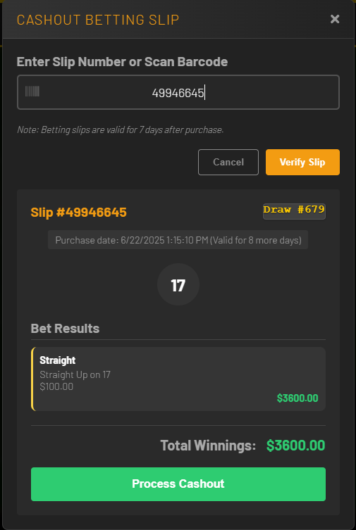
🎥 Video: Complete Cashout Workflow Demonstration
Interface Components
🎫 Slip Input and Verification Section
The top section handles betting slip identification and validation:
- Modal Header: "CASHOUT BETTING SLIP" title with close button (X)
- Input Label: "Enter Slip Number or Scan Barcode" instruction
- Slip Number Field: Text input with barcode scanner icon for manual entry or scanning
- Validity Notice: "Note: Betting slips are valid for 7 days after purchase" warning
- Action Buttons: "Cancel" (gray) and "Verify Slip" (orange) buttons
- Input Validation: Real-time validation of slip number format and structure
📋 Slip Details Display
After verification, detailed slip information is displayed:
- Slip Identification: Slip number prominently displayed (e.g., "Slip #49946645")
- Draw Information: Associated draw number (e.g., "Draw #679")
- Purchase Details: Date and time of purchase with validity period
- Winning Number: Large display of the drawn winning number
- Status Indicators: Visual indicators for slip validity and processing status
🎯 Bet Results Section
The results area shows detailed bet outcomes and calculations:
- Bet Type Display: Shows each bet type placed (e.g., "Straight")
- Bet Details: Specific bet information (e.g., "Straight Up on 17")
- Stake Amount: Original bet amount (e.g., "$100.00")
- Winning Status: Visual indicators for winning vs. losing bets
- Payout Calculation: Individual bet winnings (e.g., "$3600.00")
- Result Highlighting: Winning bets highlighted with green borders/colors
💰 Payout Summary
The bottom section provides payout totals and processing controls:
- Total Winnings: Large, prominent display of total payout amount
- Currency Formatting: Proper monetary formatting with dollar signs and decimals
- Process Button: Green "Process Cashout" button for final transaction
- Success Confirmation: "Cashout processed successfully!" message after completion
- Receipt Generation: Automatic receipt creation and display
💡 Understanding Cashout Scenarios
Different cashout situations require specific handling:
- Winning Slips: Display winning bets with green highlighting and payout amounts
- Losing Slips: Show "Sorry, none of your bets won for this draw" message
- Partial Wins: Some bets win while others lose on the same slip
- High-Value Payouts: Large winnings may require additional verification
- Expired Slips: Slips older than 7 days cannot be processed
Cashout Processing Workflow
🔍 Step-by-Step Cashout Process
-
Customer presents betting slip
Customer approaches with physical betting slip requesting cashout or payout. -
Open cashout interface
Click "Cashout" button in main interface to open the cashout modal dialog. -
Enter slip number
Type the slip number manually or use barcode scanner to input slip identification. -
Verify slip details
Click "Verify Slip" to validate slip authenticity and retrieve bet information. -
Review slip information
Confirm slip number, draw number, purchase date, and validity period. -
Check winning status
Review bet results, winning number, and individual bet outcomes. -
Calculate total payout
Verify total winnings calculation and payout amount accuracy. -
Process cashout
Click "Process Cashout" button to complete the transaction. -
Generate receipt
System automatically creates official cashout receipt for customer. -
Complete transaction
Provide cash payout to customer and give them the receipt.
🎯 Different Cashout Scenarios
Handle various cashout situations with appropriate procedures:
- Standard Winning Slips:
- Process immediately after verification
- Confirm winning bets and payout calculations
- Generate receipt and provide cash payment
- High-Value Payouts:
- Verify customer identity thoroughly
- May require supervisor approval for large amounts
- Document transaction details for audit purposes
- Follow cash handling procedures for large payouts
- Losing Slips:
- Politely explain that no bets won
- Show customer the losing bet results
- Encourage future participation
- No payout or receipt generation required
- Expired Slips:
- Explain 7-day validity policy to customer
- System will prevent processing of expired slips
- Refer customer to management if needed
- Document expired slip attempts
Security and Verification
🔒 Slip Authentication Process
The system employs multiple security measures to prevent fraudulent cashouts:
- Slip Number Validation: Betting slip numbers must match database records exactly
- Purchase Verification: System confirms slip was legitimately purchased and paid for
- Draw Matching: Verifies slip corresponds to correct draw number and results
- Validity Period Check: Automatically enforces 7-day expiration policy
- Duplicate Prevention: Prevents multiple cashouts of the same winning slip
- Real-Time Validation: Immediate verification prevents delayed fraud detection
🛡️ Fraud Prevention Measures
Implement security protocols to protect against cashout fraud:
-
Examine physical slip
Check betting slip for signs of tampering, alteration, or forgery. -
Verify slip authenticity
Confirm slip paper, printing quality, and format match official standards. -
Cross-reference customer
For high-value payouts, verify customer identity matches slip purchaser if possible. -
Check system alerts
Watch for any system warnings or flags during slip verification. -
Monitor payout patterns
Be alert for unusual cashout requests or suspicious customer behavior. -
Escalate concerns
Contact supervisor immediately if fraud is suspected.
⚠️ Fraud Alert Indicators
Watch for these red flags that may indicate fraudulent cashout attempts:
- Betting slip appears damaged, altered, or poorly printed
- Customer cannot provide reasonable explanation for slip possession
- Slip number format doesn't match standard patterns
- Customer becomes agitated when asked for verification
- Multiple high-value slips presented by same customer
- System shows slip was already cashed out
- Slip details don't match system records
- Customer rushes the cashout process or avoids questions
💳 Customer Identity Verification
For high-value payouts, implement appropriate verification procedures:
- ID Requirements: Request government-issued photo identification for large payouts
- Verification Limits: Understand casino policy on when ID verification is required
- Documentation: Record customer information for significant transactions
- Signature Verification: Compare signatures when applicable
- Supervisor Approval: Obtain management authorization for exceptionally large payouts
📊 Payout Limits and Authorization
Understand authorization requirements for different payout amounts:
- Standard Payouts: Process routine winnings within normal limits independently
- High-Value Thresholds: Know dollar amounts that require supervisor approval
- Cash Drawer Limits: Ensure sufficient cash availability for large payouts
- Daily Limits: Understand any daily payout restrictions or reporting requirements
- Documentation Requirements: Complete necessary forms for regulated payout amounts
Integration with Main POS System
🔄 Real-Time Transaction Integration
The cashout system maintains seamless integration with all casino systems:
- Immediate Processing: Cashouts are recorded instantly in transaction management
- Cash Drawer Integration: Payouts automatically update cash drawer balances
- Audit Trail Creation: Complete transaction records for compliance and reconciliation
- Receipt Generation: Official receipts created automatically for customer records
- System Synchronization: All interfaces update simultaneously with cashout data
💼 Daily Operations Integration
Cashout processing supports essential daily cashier activities:
- Shift Reconciliation: Cashout totals included in daily cash drawer balancing
- Customer Service: Efficient processing enhances customer satisfaction
- Financial Reporting: Cashout data feeds into daily, weekly, and monthly reports
- Inventory Management: Cash drawer levels monitored for adequate payout funds
- Compliance Support: Transaction records support regulatory requirements
📋 Receipt and Documentation
Proper documentation ensures accurate record-keeping and customer service:
- Official Receipts: System-generated receipts include all transaction details
- Receipt Information: Slip number, draw number, purchase date, winning bets, payout amount, cashout date
- Customer Copy: Provide receipt to customer as proof of transaction
- Internal Records: Maintain copies for audit and reconciliation purposes
- Digital Storage: Electronic records stored in transaction management system
🎯 Best Practices for Cashout Processing
- Accurate Verification: Always verify slip numbers carefully before processing
- Customer Communication: Clearly explain payout calculations to customers
- Security Awareness: Stay alert for signs of fraudulent cashout attempts
- Professional Service: Handle all cashout requests courteously and efficiently
- Cash Management: Ensure adequate cash drawer funds for expected payouts
- Documentation: Keep accurate records of all cashout transactions
- System Knowledge: Understand payout calculations and verification procedures
- Problem Resolution: Handle cashout disputes professionally and escalate when needed
🏆 Cashout Processing Success Tips
- Double-check slip numbers before verification to avoid processing errors
- Familiarize yourself with common bet types and their payout calculations
- Practice using the barcode scanner for efficient slip number entry
- Understand your authorization limits for different payout amounts
- Know when to escalate unusual cashout requests to supervisors
- Maintain professional demeanor when handling cashout disputes
- Use cashout processing as an opportunity to enhance customer experience
- Keep cash drawer organized and adequately stocked for payouts